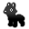
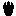
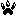
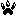
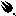
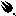
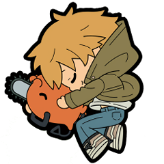
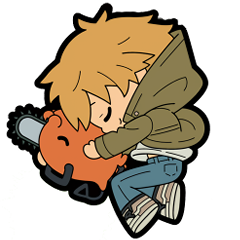
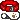

details about the webmaster...s?
i'm known by quite a few names, but my screen/"collective" name is chimera. i'm currently 24 years old (04/25/00) and go by they/them pronouns, usually... unless i don't. most of the time i don't like to use labels, and i don't have any fancy college degree or any real job titles or anything like that. i code for fun, and sometimes i draw (you can commission me if you want.). i'm a high school drop out who's just getting by. as an animal, i don't have a gender, but you could consider me "nonbinary" if you want to.
i consider myself a very passionate person, albeit a bit subdued. though i may not always have much energy, i always have "heart". i am introverted (to an extent) and value my time on my own. however, i love my friends very much and believe myself to be very loyal and caring. i'm not always the best at this kind of thing, but i try very hard. i'd be the skiddish, bitey beast you'd have to do a thousand quests to befriend in an RPG, but at the end of all that effort you get a powerful creature to fight by your side... would you take the chance? ...i might still run away, but it's up to you.
there are a LOT of things in this world i care about, so i'll have a lot to say around this site in all kinds of places. i'm a lifelong pokemon autist and i'm biologically, spiritually, and mentally enmeshed with "the Earth" and "nature". biology, ecology, evolution, other such things are my forte. other stuff erring more on the media side of things i like include digimon, UTDR, the MOTHER series, dungeon meshi, chainsaw man, and a lot of other stuff. i consider myself collectively nonhuman, currently stuck in a human form. i'm an animal! seriously, it's not a joke to me. this site will be a vessel to express all of this stuff, and a lot more. it's a constant work in progress, and i'm always changing how i think i want to "present" my stuff to the world. so be patient, k?

i'm both mentally ill (dissociative identity disorder*, etc.) and physically disabled (fibromyalgia), as well as autistic. i've gone through therapy for all of this for years now, though i'd been through treatment on and off throughout most of my life. not that my medical information is anyone's business, but it has a large impact on the function of this site, both in terms of layout and tone inconsistencies as well as potential large gaps in activity, so it's important to keep in mind. i wouldn't be who i am without any of this, unfortunately, so it may as well go here...
on the note of D.I.D*, this site will be run by multiple parts, or you may know them as "alters". as a result, like i said, page layouts and typing styles across pages may vary. i'm fairly private about this stuff unless i'm not. whoever wants to post will post whatever, and this just serves as a disclaimer to clear any confusion. although nowadays i tend to present as a semi-anonymous collective, just keep this in mind when navigating the site. i used to denote more specific areas to the site to certain parts, but not as much anymore. anyways, all of this may change at any time.
coda is my best friend, adventuring partner, and my absolute. you may know me from seeing us play online, or doing drawings together. we have another site where we host our art together, which was this site's original home.
other misc. stuff
my stats |
my favorite... |
types:   |
colors: green, yellow, brown |
| nature: Relaxed, Impetuous and silly | animals: martens, wolves, more |
shapes:    |
drink: dr pepper forever |
footprints:

 



 
 |
bands: black dresses, shinsei kamattechan |
{kind=link}
"wow, he is literally me!"
")
") 
( hover for names )
generally, people call me...
animal, bitch, canine, creature, dog, dude, dyke
multiply gendered, non-gendered, furry, object, thing, good dog! 
furry code
FCf5a~DDf4a~MMfmp6a A+ C- D+++ H M- P++++ R-- T++++ W- Z+ Sp# RL- a cn++ d e** f++++ h* iwf+++ j++ p s!